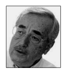
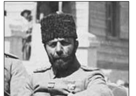
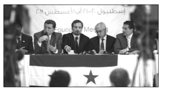
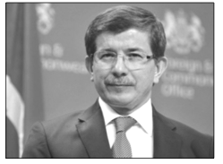

6. Baas Partisi, İdeolojisi, İdeologları ve Faaliyetleri
Son dönem Suriyesi’ni incelerken BAAS PARTİSİ’ni,108 ideolojisini, ideologlarını ve faaliyetlerini tahlil etmek elzemdir. Bu inançla, Baas Partisi hakkında şunları söyleyebiliriz::
108 Yasin ATLIOĞLU, a.g.e., s.37 / Albert HOURANİ’nin, Baas Hareketi’nin kuruluşu hakkındaki ifadesi: “Baas Partisi, Suriye’nin siyasal hayatına az sayıda kentli büyük ailenin ve bunların çıkarlarını dile getiren partilerin ya da önderlerin oluşturdukları gevşek birliklerin hâkim olmasına karşı bir meydan okumayı temsil ediyordu… Partinin kökeni, Suriyelilerin ulusal kimliği ve bu kimliğin Arapça konuşan cemaatlerle ilişkisi hakkında yapılan entelektüel tartışmalarda yatar. Bu tartışma Suriye’de diğer yerlere nazaran daha acildi, çünkü burada Britanya ile Fransa’nın kendi çıkarlarına uygun biçimde çizdikleri sınırlar doğal ve tarihsel ayrımlara çoğu Ortadoğu ülkesinden daha az tekabül ediyordu.”
Geniş Bilgi için bakınız: Ozan Nejat Aslan, a.g.e., s.58/63 / Özge ÖZKOÇ, Suriye Baas Partisi: Kökenleri, Dönüşümü, İzlediği İç ve Dış Politika (1943–1991), Yüksek Lisans Tezi, Ank.Ün. Sos.Bil. Enstitüsü Uluslararası İlişkiler Anabilim Dalı, Tez Danışmanı: Doç. Dr. Melek FIRAT, Ankara, 2007
BAAS, Arapların tek sosyalist devlette birleşmesini amaçlayan partidir.109
109 Fahir ARMAOĞLU, Filistin Meselesi ve Arap-İsrail Savaşları (1948-1988), Türkiye İş Bankası Kültür Yayınları, Genel Yayın No.: 299, Ofset Repromat, İkinci Baskı, Ankara, 1991, s.207/208
Partinin resmen kuruluşu ise, 1953’te Mişel EFLAK’ın ARAP DİRİLİŞ PARTİSİ ile Ekrem HAVRANİ’nin ARAP SOSYALİST PARTİSİ’nin birleşmesiyle gerçekleşti. Bu nedenle, BAAS PARTİSİ’ne Arap Sosyalist Diriliş Partisi de denir.110
Partinin sloganı; BİRLİK, ÖZGÜRLÜK ve SOSYALİZM’dir.111/112 Baas Hareketi, Suriye’de ortaya çıktı, Irak’ta ve diğer Arap ülkelerinde de taraftar buldu. Suriye Baas Hareketi’nin İlk kongresi, 7 Nisan 1947’de Şam’da yapıldı. Kısa süre içinde Arap ülkelerinin büyük bölümünde örgütlendi. Parti tüzüğünün 7. Maddesi’nde şöyle bir ifadeye yer verildi:
“Arap anavatanı, Toros dağlarından Basra Körfezi’ne, Arap Okyanusu’na (Hint Okyanusu) Etyopya dağlarına, Büyük Sahra’ya. Atlantik Okyanusu’na ve Akdeaniz’e kadar uzanan topraklardır.”113
113 Fahir ARMAOĞLU, a.g.e., s.208
BAAS PARTİSİ’nin ideologları farklı dinden ve mezhepten üç yakın arkadaştır.114
114 Özge ÖZKOÇ, a.g.e., s.22
- 1910 doğumlu Mişel EFLÂK,
- 1912 doğumlu Salâh (Salahaddin) BİTAR,
-
1908 doğumlu Zeki ARSUZİ.
- Mişel, annesi Musevî, babası Fransız, kendisi Ortodoks Hıristiyan;
- Salâh, Sünnî Müslüman;
- Zeki ise Hataylı Alevî Müslüman…
Üçü de Paris’te, Sorbonne Üniversitesi’nde felsefe okumaya gitti. Paris’te rastladıkları düşünce akımları, onları Arap dünyası için yeni bir ideoloji yaratmaya sevketti.115 Bu kişiler, daha parti resmen kurulmadan 1940’lı yıllarda partinin ideolojisini belirledi.
115 Özge ÖZKOÇ, a.g.e., s.26/27
Baas Partisi, 1970’den 1990’lı yılların ortasına kadar çok güçlü bir konumda idi. 1990’lı yılların ortalarından itibaren parti içinde “Eski Baasçı”, “Yeni Baasçı” adlarıyla iki ayrı kanat ortaya çıktı.
Parti Kongresi, dört yılda bir yapılırdı. En son kongre, 2006’da yapıldı. Haziran 2010’da, tüzük doğrultusunda Baas Partisi’nin yeni bir kongresi yapılmaydı; lâkin yapılmadı. En son görevi Cumhurbaşkanı Yardımcısı olan Abdülhalim HATTAM, 2006’daki parti kongresinde görevinden alındı. 2006’dan günümüze kadar parti kongresinin yapılmaması, Baas Partisi’nin, 70’li ve 80’li yıllardaki gücünü kaybettiğinin bir göstergesi olarak algılandı.
Partinin kurucularından olan Ortodoks Hıristiyan Mişel EFLÂK, 1989’da Paris’te öldü. Cenazesi Irak’a götürüldü. Irak’ın o zamanki lideri Saddam HÜSEYİN tarafından yapılan bir açıklama ile “EFLÂK’ın seneler önce Müslüman olup Ahmed adını aldığı” duyuruldu ve âyetlerle süslü bir kubbenin altına Müslüman âdetlerine göre defnedildi. Saddam HÜSEYİN, Mişel EFLAK’ın tabunu taşıdı.116
Irak’taki Baas Rejimi, 2003 yılındaki ABD işgâliyle son buldu. Daha çok Suriye ve Irak’ta egemen olan Baas Partisi, 1960’larda İçişleri Bakanlığı görevinde bulunan Ali Salih SAADİ’nin dediği gibi, BAAS. İktidara bir CIA treniyle gelmiştir.117 Trendeki yolcular, kariyerlerinde hızla yükselen Saddam HÜSEYİN ve Hafız ESAD’dır.
117 Tim WEINER, a.g.e., s.175
a. Muhaberat ve Suriye Ordusu
Günümüz Suriyesi’nde Baas Partisi’nden daha güçlü konumda olan kimdir veya nedir diye sorulacak olursa; cevabımız şudur: Muhaberat ve Suriye Ordusu…
Suriye yönetim karşıtlarının aklına, “Rejim” deyince MUHABERAT gelmektedir. SURİYE MUHABERATI, Adalet ve İçişleri Bakanlıkları başta olmak üzere bütün bakanlıkların ve Suriye Hukümeti’nin de üzerinde bir güçtür. SURİYE MUHABERETI, Hava İstihbarat, Askerî İstihbarat, İç İstihbarat, Dış İstihbarat, Siyasî Güvenlik Bürosu, Filistin İstihbarat Bürosu, Bilgi İstihbarat Teşkilâtı, Muhabere Bürosu gibi 16 ayrı birimden meydana gelen aile menfaatine, baskı ve zulme dayalı bir istihbarat örgütüdür.
Suriye Ordusu’nda “Cumhuriyet Muhafızları” nın ayrı önemi bulunmaktadır. Bunlar, maddî menfaatlerle ve katı ideolojik kalıplarla birbirine bağlı Baas yöneticilerinin, Muhaberat’ın genel olarak Baas Rejimi’nin muhafızları konumundadır. Bu birliklerin başında Beşar ESAD’ın ağabeyi Mahir ESAD bulunmaktadır.
Suriye istihbarat örgütü Muhaberat’taki elemanlar, Rus uzmanlar tarafından yetiştirilmektedir. Muhaberat, “ideolojik istihbarat” sistemi ile faaliyetlerini yürüten bir istihbarat örgütüdür. Bu yönüyle diyebiliriz ki, Suriye Muhaberatı, kendi ideolojisine uymayan insanları DÜŞMAN kabul eden bir anlayışa sahip istihbarat örgütüdür. Suriye’de televizyon, radyo ve medya kuruluşlarının yöneticileri, MUHABERAT’tan gayri resmî onay aldıktan sonra seçilmektedir.
Suriye Ordusu’nda ortalama 550 bin personel bulunmaktadır. Ayrıca, ortalama 400 bin Milis Kuvvetleri personelinin varlığından söz edilmektedir.118
118 Hakan ERTAŞ, a.g.e., s.61
Bir başka kaynakta ise; 2000 ve 2004 verilerine göre, Kara Kuvvetlerinin toplam personel sayısı 215 bin olarak gösterilmektedir. Hava Kuvvetlerinin ihtiyat kuvvetleriyle birlikte toplam personel sayısı 50 bindir. Hava Savunma Komutanlığının ihtiyat kuvvetleriyle birlikte 70 bin personeli bulunmaktadır. Deniz Kuvvetleri ise, ihtiyat kuvvetleriyle birlikte toplam 8000 civarında bir personele sahiptir. Deniz Kuvvetleri, 1950 yılında Fransa’dan alınan birkaç küçük gemi ve Fransız okullarında denizcilik eğitimi alan personel tarafından kurulmuştur.119
119 Samagan MYRZAİBRAİMOV, a.g.e., s.15/16
Suriye Ordusu’nda ayrıca, “Özel Kuvvetler” niteliğine sahip birlikler bulunmaktadır. Bunlar: Savunma Bölükleri (Saraya ed-Difa), Cumhuriyet Muhafızları ve Es-Sayka’dır.120/121
120 Geniş bilgi için bakınız: Samagan MYRZAİBRAİMOV, a.g.e., s.16/22
121 Geniş bilgi için bakınız: Ozan Nejat Aslan, a.g.e., s.64/67
7. İnsanî Yardım Koridoru
Üzerinde hassasiyetle durulması gereken bir diğer konu ise İNSANÎ YARDIM KORİDORU’nun açılmak istenmesidir.
BM; ABD ve Fransa’nın öncülüğünde, ESAD’ı bahane edip Suriye’yi işgâl etmek için “İnsanî Yardım Koridoru” kurmak istemektedir.122
1991’de Irak’ın kuzeyinden Türkiye’ye iltica etmek isteyen mültecileri koruma maskesi altında kurulan ÇEKİÇ GÜÇ’le bölge, nasıl Batılıların işgâl alanına dönüşmüşse; “İnsanî Yardım Koridoru” adı altında “SURİYE’Yİ İŞGÂL KORİDORU” hazırlanmaktadır.123
Kofi ANNAN’ın sözcüsü Ahmed FEVZİ, Annan’ın Suriye’de insanî yardım koridorları açılması çağrısı yaptığını duyurmaktadır.
Fransız siyasîler (Eski Cumhurbaşkanı Nicolas SARKOZY gibi), “İnsanî koridorların kurulması için gerekli şartların oluştuğunu” söylemektedir.
ANNAN’ın çağrısı “Krizin sıcak çatışmaya dönüşeceği” şeklinde yorumlanmaktadır.

Peki, İnsanî Yardım Koridoru hakkında bizden, kimler neler söylemektedir? Şimdi, bunları paylaşalım:
Nüzhet KANDEMİR (E.Büyükelçi): “Kanaatim insani koridor açılması demek, üçüncü bir ülke topraklarına müdahale edilmesi demektir. BM Güvenlik Konseyi’nden karar çıkartmadan olmaz. Konsey’in kararını beklemek lâzım. Bunlar, sadece bir dilek beyanıdır. İnsani koridor BM kararı olmadan açılırsa Suriye bunu bir savaş nedeni sayar mı? Bu Suriye’nin bir takdiri, ama bir ülke kendi rızası olmadan topraklarına girilip insani nedenlerle de olsa bir uygulamaya geçilmesini istediği şekilde yorumlar. İnsanî koridor açıldığı zaman elbette korunma konusu beraberinde gelecektir. Bu koruma unsuru da silahlı bir müdahalenin belirtisidir.”124
Hikmet ÇETİN (Eski Dışişleri Bakanı): “Öncelikle ilgili ülkenin buna ‘evet’ demesi gerekiyor. Zorla bir başka ülkeye ‘size insani koridor açtık’ denemez. Diyelim ki ilgili ülke istemiyor, böyle bir talebi yok bunu kime götüreceksin, nasıl götüreceksin bu bile çatışma durumu ortaya çıkarabilir. Bu nedenle, işin uluslararası dayanışma içerisinde çözülmesi gerekiyor. İnsani yardım bana göre Türkiye üzerinden yapılmalı. Ateşkes kalıcı hale gelirse göç de durur. O zaman zaten tampon bölgeye ihtiyaç kalmıyor. TAMPON BÖLGE, Türkiye’nin güvenliğini bir şekilde tehdit altında görmesi durumunda olacak bir olay.”125

İnal BATU (E. Büyükelçi): “…/…Birileri arkamızdan itmeye çalışıyor. Türkiye bu maceraların uzağında dursun. Zaten kâfi derecede taraf olduk bu konuda. Türkiye kuşatılmış durumda. Türkiye’yi tahrik edenler var. ’Sen orada güvenlikli bölge kur, sen orada yardım koridorları aç’ diye. Bunların hepsi iyi niyetten yoksun. Hele Libya konusunda ne kadar güvenilmez olduğunu gördüğümüz Fransa’dan gelirse böyle bir öneri, Türkiye kesinlikle bu işe atılmamalı. Suriye, ’buyurun gelin benim toprağımda tampon bölge kurun’ demeyeceğine göre, savaşı göze alman lazım. BM Güvenlik Konseyi karar alsa bile, bu karar Rusya ve Çin tarafından veto edilecek. …/…”126
Nejat ESLEN (E.Tuğgeneral): “…/…ABD’nin buradaki jeo-stratejik davranışlarında İsrail’in ve ABD’deki Yahudi lobilerinin önemli etkisi var. İsrail, olabildiğince zayıflatılmış, kaos içinde bir Suriye; parçalanmış, bölünmüş, güçsüzleştirilmiş bir Suriye ister. Biz, Suriye’nin kuzeyinde bir tampon bölge oluşturursak bir yerde o coğrafyayı bölmüş oluyoruz. Suriye’ye yapılacak her silahlı müdahale Suriye’nin parçalanmasına yol açar. Suriye’nin kuzeyinde tampon bölge Türkiye’nin çıkarlarına ters düşebilir. Dolayısıyla orada bir tampon bölge oluşturulması, Irak’ın kuzeyinde Kürt devletini oluşturan Çekiç Güç’e benzer bir durum ortaya koyabilir. Sünniler ülkenin ortasında ve güneyinde yaşıyor. Kürtler ise kuzeyinde yaşıyor. Tampon bölge kurulacaksa o zaman Kürt bölgesinde kurulacak demektir. Bu da aslında Büyük Kürdistan’a doğru giden istikamette bizim çıkarlarımıza aykırı gelişmeleri de tetikleyebilir. Yani, gelecekte kurulması plânlanan BÜYÜK KÜRDİSTAN’ın Akdeniz’e ulaşmasına da imkân tanıyabilir. …/…”127
Ahmet DAVUTOĞLU (Dışişleri Bakanı): “…/… Suriye’de İnsanî durum kötüleşiyor. Tüm uluslararası kurumların sorumluluk alması gerekiyor. Özellikle BM’nin Suriye halkına elini uzatması gerekiyor. Suriye’de hayatta kalabilmek için insanların en temel ihtiyaçlarının giderilmesi gerekiyor. Elimizdeki tüm mekanizmaları kullanarak bölgeye insanî yardım göndermeye devam edeceğiz. …/…”128
8. Türkiye-Suriye Sorunları ve İlişkileri Hakkında Değerlendirme
Türkiye Suriye ilişkileri kapsamında, yakın geçmişte Türkiye ile Suriye arasında üç temel sorun bulunmaktadır. Bunlar:
Hatay ilimize yönelik talepler
Su Sorunu
PKK’ya verilen destek
Bu temel sorunlardan başka; Süleyman Şah Türbesi başta olmak üzere Türk büyüklerinin türbeleri, Suriye’de bulunan Türk vatandaşlarına ait gayrimenkuller, Selçuklu ve Osmanlı eserlerinin korunması ve restore edilmesi gibi konular da Türkiye – Suriye arasında yaşanan temel sorunlardandır.129
a. Hatay Sorunu
Hafız ESAD Dönemi’nde Suriye’deki okullarda ve kamu kurumlarında bulunan haritalarda HATAY vilayetimiz Suriye vilayeti olarak gösterildi. Hafız ESAD’ın talimatıyla okullarda Osmanlı Devleti’nin sömürgeci anlayışa sahip olduğu hakkında dersler verildi; Türk düşmanlığını yansıtacak ve güçlendirecek boyutta eğitim programları, çok küçük yaşlardan itibaren Suriyeli çocuklara uygulandı. 130
130 R.Kürşat RÜSTEMOĞLU, a.g.e., s.21
Beşşar ESAD Döneminde ise, Hatay konusu, her iki ülke arasında sorun olarak devam etti. Ocak 2004’te Türkiye’ye gelen Beşar ESAD, Hatay’ın iki devlet arasında sorun olduğundan ve bu sorunun zaman içinde çözüleceğinden bahsetti. Hatay’ı musalla taşına konmuş bir cenazeye benzeterek bir imam tarafından kaldırılması gerektiğini söyledi.131
131 Zişan ŞİRİN AYRANCI, a.g.e., s.65
b. Su Sorunu
Ortadoğu ülkelerinin pek çoğunda “SU” vazgeçilmez bir değerdedir. İçme ve sulama amaçlı su kaynakları yetersiz olan ülkelerin ayakta durabilmesi ve hayat haklarını koruyabilmesi oldukça zordur.132/133 Bölgede su sorunu yaşayan ülkelerden biri de Suriye’dir. Kısa adı GAP olan Güneydoğu Anadolu Projesi’nden Suriye’nin zarar göreceğini iddia eden Hafız ESAD, SU konusundaki kaygılarının karşılığında geçmiş yıllarda KÜRTÇÜLÜK ve PKK kartını oynamayı menfaatine uygun gördü. Uzun yıllar PKK’ya askerî ve lojistik destek sağladı.134 Ülkeler arası SU SORUNU, ayrı bir analiz gerektirdiği için ayrıntılı olarak üzerinde durmayacağız.
132 Önder ÖNGÖR, a.g.e., s.46
133 Özkan YAZGAN, a.g.e., s.64/67
134 Selahattin İBAS, Türkiye Suriye İlişkilerinin Tarihi, Yayına Hazırlayanlar: Türel YILMAZ, Mehmet ŞAHİN, Ortadoğu Siyasetinde Suriye, Platin Yayınları, Ankara, 2004, s.55/56 / http://www.mfa.gov.tr/turkiye_nin-su-politikasi.tr.mfa
c. PKK Sorunu
1980’li ve 1990’lı yıllarda Suriye’nin, PKK ve liderlerine para, eğitim ve lojistik destek verdiği bilinmektedir. Bu nedenle, o dönemlerde Türkiye’deki ayrılıkçı Kürtler ve terör örgütü PKK elemanları Suriye yönetimiyle oldukça sıcak ilişkiler yaşamıştır. Suriye hükümetinin PKK ile ilişkisini kestiği, onlara maddî ve manevî destek vermekten uzaklaştığı 1998 yılından itibaren ise Suriye, Türkiye, Irak ve İran’da yaşayan ayrılıkçı Kürtler ile PKK elemanları, Suriye yönetimine düşmanca tavırlar sergilemiştir.135
135 Samagan MYRZAİBRAİMOV, a.g.e., s.11
20 Ekim 1998 tarihinde imzalanan ADANA MUTABAKATI, iki ülke arasındaki PKK terör örgütüyle ilgili sorunu çözmüş gibi göründü. Bu tarihten itibaren Suriye yönetimi, PKK’ya en azından açıktan destek vermeyi kesti.
Suriye yönetimi, 2011 yılının başından itibaren geçmişte olduğu gibi PKK’yı himaye etmekte, ülkesinde barındırmakta, Türkiye aleyhinde PKK silâhını kullanmaktadır.136
Suriyeli, rejim muhaliflerinden Kürt siyasetçi Salah BEDREDDİN’in ifadesine göre; Son aylarda iki bin PKK’lı Suriye’nin Afrin şehrindeki Kurmen Dağları’na yerleşti. PKK, rejim muhalifleriyle savaştığı için “Suriye devleti teröristlere silâh bile dağıttı.” Avestakurd adlı web sitesinde açıklama yapan BEDREDDİN, “PKK’lıların Suriye istihbaratında görevlendirildiğini” belirtti. Salah BEDREDDİN’in açıklamasına göre; geçen yılın son aylarında Irak Cumhurbaşkanı Celal TALABANİ, Suriye’deki BAAS REJİMİ ile PKK’yı barıştırmak için çaba gösterdi.137
ç. İkili İlişkiler
İki ülke arasında siyasî, iktisadî, güvenlik, sosyal ve kültürel alanlarda ikili ilişkilere önem verildi. Bu çerçevede, Cumhurbaşkanı, Başbakan, Bakan ve diğer düzeylerde karşılıklı ziyaretler ve temaslar da arttı. İki ülke arasında Eylül 2009’da YÜKSEK DÜZEYLİ STRATEJİK İŞBİRLİĞİ KONSEYİ (YDSK) kuruldu.138
Başbakanlar başkanlığında kurulan ve her iki ülkeden 10’dan fazla bakanın üye bulunduğu Yüksek Düzeyli Stratejik İşbirliği Konseyi’nin Bakanlar düzeyindeki ilk toplantısı 13 Ekim 2009 tarihinde Halep ve Gaziantep’te yapıldı.
Başbakanlar düzeyinde Yüksek Düzeyli Stratejik İşbirliği Konseyi’nin ilk toplantısı ise 23 Aralık 2009 tarihinde Şam’da gerçekleşti.
Halep ve Gaziantep’te yapılan ilk toplantıda VİZE MUAFİYETİ ANLAŞMASI, Şam’da yapılan ikinci toplantıda ise siyasî, sağlık, tarım, ticaret, enerji, ulaştırma, su, eğitim, bilim, kültür, çevre ve güvenlik konularında 50 anlaşma imzalandı.
Yüksek Düzeyli Stratejik İşbirliği Konseyi’nin 2-3 Ekim 2010 tarihinde Lazkiye’de ve 20-21 Aralık 2010 tarihinde Ankara’da yapılan toplantılarda ise 13 anlaşmaya imza atıldı. 139
Türkiye, Suriye, Mısır ve Amerika gibi ülkelerinde dahil olduğu ÜST DÜZEY ASKERÎ DİYALOK KONSEYİ ise, ilk toplantısını 2009’da Ankara’da; ikinci toplantısını 2010’da Şam’da yaptı.
Suriye ekonomisi kırılgan bir yapıya sahiptir. Tarih boyunca, komşu ülkeler başta olmak üzere dış ülkelerin iktisadî destekleriyle ayakta durabilme özelliği taşımaktadır. Daha çok, ticaret yollarının üzerinde bulunması nedeniyle ticarî önemi görülmektedir.
2008-2010 döneminde İki ülke arasında yaşanan güzel gelişmelere rağmen; Türk iş adamları, Suriye’de istedikleri düzeyde iş ortamı oluşturamadı, ticaret ve ekonominin gelişmesi amacıyla güçlü bir iletişim kuramadı. Suriye’deki mevcut yasalar ve mevcut bankacılık sistemindeki hantallık, ticaretin ve iktisadî ilişkilerin ağır bir biçimde yürümesine neden oldu. Beşar ESAD, Suriye’de yatırım yapmak isteyen yerli ve yabancı girişimcilere sermaye sağlanması amacıyla serbest bölgelerde yabancı bankaların faaliyet göstermesine izin veren yasayı çıkarmasına rağmen; ideal ölçülerde ticaret ve iktisadî girişimler yapılamadı.140
140 Hakan ERTAŞ, a.g.e., s.55
Buna rağmen; Türk firmalarının Suriye’deki yatırımlarında önemli ölçüde artış yaşandı. Ticaret hacmi, 2006 yılındaki 796 milyon ABD doları seviyesinden 2010 yılında 2.5 milyar ABD dolarına yükseldi. Türkiye’nin ihracatı 1.85 milyar, ithalatı 663 milyon dolar seviyesine çıktı.
Suriye, harcamaların % 30’nu savunmaya ayırmaktadır. Savunmaya ayrılan bu yüksek paydan dolayı, diğer sektörlerdeki harcamalar kısıtlanmaktadır.
* * *
10 Haziran 2010 tarihinde İstanbul’da Dışişleri Bakanları düzeyinde Türkiye, Suriye, Ürdün ve Lübnan arasında YÜKSEK DÜZEYLİ DÖRTLÜ İŞBİRLİĞİ KONSEYİ kuruldu.
2011 yılının başından itibaren Tunus, Cezayir, Libya, Mısır, Yemen gibi Arap ülkelerinde görülen ve ARAP BAHARI adı verilen toplumsal olayların Suriye’de yansımalarının görülmesi ile Türkiye - Suriye ilişkileri farklı boyutlar kazandı.
Yakın geçmişte, Türkiye – Suriye ilişkileri ne zaman olumlu düzeyde gelişme gösterse, Suriye’de Osmanlı Dönemi canlı tutuldu, hâtıralarla yaşatıldı. Özellikle, II. Abdülhamit’in Kudüs merkezli Filistin bölgesinin Musevilere satılmaması gündeme getirildi; Suriye sokaklarında halk tarafından Osmanlı dönemine duyulan özlem dilden dile aktarıldı.
Türkiye – Suriye ilişkileri ne zaman olumsuz düzeyde gelişme gösterse, iki ülkenin yöneticileri birbirine olumsuz mesajlar verse, Cemal Paşa Olayı gündeme getirildi; medyada ve Suriye sokaklarında, 100 yıl önce yaşanan olayın vahameti canlı tutuldu, ön plâna çıkarıldı. Yüz yıl önce vuku bulan Cemal Paşa Olayı nedir? Bir hatırlayalım:

Suriye Valisi Cemal Paşa, 1915’te Arapları kızdıran birtakım kararlar aldı.
Kadınların peçe kullanma mecburiyetinin kaldırılması,
Şer’î Mahkemeleri’nin (Meşihat’ın) görevlerinin Adliye Nezareti’ne verilmesi ve MEŞİHAT’ın önemsiz hale getirilmesi,
Suriye’de iki binden fazla ileri gelen ailenin Anadolu’ya sürülmesi ve bu amaçla Tehcir Komisyonu’nun kurulması.
Bu şekilde, Suriye’de Arapların Osmanlı yönetimine zaten var olan hoşnutsuzluğunu daha da arttırdı. Alınan kararlara muhalif olan kimi insanların Cemal Paşa’nın emriyle idam edilmesi yaraya tuz-biber ekti.
Cemal Paşa’nın Suriye bölgesinde çok sayıda ileri gelen Arap aydın ve düşünürü vatana ihanet suçlamasıyla idam ettirmesi, üzerinde durulması gereken diğer önemli bir olaydır. İdam edilenler arasında masum insanların da bulunması, İngiliz ve Fransızlar tarafından önceki zamanlarda atılan Türklerle Araplar arasındaki kin ve nefret tohumlarını güçlendirdi.
* * *
III. BÖLÜM-SURİYE’NİN MUHTEMEL GELECEĞİ
BAAS PARTİSİ ve ESAD yönetimine karşı oluşan özgürlük ve direniş hareketleri Suriye’yi bir iç savaşa doğru götürmektedir.
Türk Hükûmeti, Suriye yönetimine halkın taleplerinin karşılanması doğrultusunda reformlar yapmasını istemektedir.
Birleşmiş Milletler ve / veya NATO kaynaklı askerî müdahale durumunda Türkiye’nin bu müdahaleye dahil olup / olmaması konusunda belirgin bir duruş henüz söz konusu değildir.
Türkiye; bir taraftan kendi menfaatini, öbür taraftan bölgedeki Müslümanların menfaatlerini koruyup kollayabilecek düzeyde olup / olmadığını yakın gelecekteki performansı ile gösterecektir. Dileğimiz; akıllı, duyarlı, toplumların tümünün yararlarını yansıtabilecek bir politikanın oluşturulmasıdır.
* * *
Suriye’yi nasıl bir gelecek beklemektedir? Suriye’nin bir taraftan Batı ülkeleriyle, diğer taraftan İran, Çin ve Rusya gibi doğu ülkeleriyle siyasî ve ticarî ilişkileri nasıl şekillenecektir? Özellikle, Türkiye – Suriye ilişkilerinde nasıl gelişmeler beklemekteyiz?
Bu soruların farklı cevaplarının olması doğaldır. Çünkü, her ülke ve her toplum kendi penceresinden bir gelecek ummakta ve bu şekilde geleceği görmek istemektedir.
Suriye’nin geleceği ile ilgili şu varsayımlar üzerinde durabiliriz:
- Türkiye’nin Suriye konusunda Batı yanlısı siyaset izlemesi; en azından bu şekilde kanaat oluşturması; menfaatleri gereği Suriye Yönetimi yanında yer alan İRAN, RUSYA ve ÇİN’i kaygılandırmaktadır.141
- Bilindiği gibi, Rusya ve Çin ikilisine Kazakistan, Kırgızistan ve Tacikistan’ın da katılmasıyla ŞANGAY BEŞLİSİ kuruldu. 2001 yılında bu beşliye Özbekistan’ın da katılımı ile birlik ŞANGAY İŞBİRLİĞİ ÖRGÜTÜ veya ŞANGAY FORUMU adını aldı.142 Şangay İşbirliği Örgütü, Amerika’nın Tek Dünya Devleti rolünü üslenmesinden sonra Avrasya ve Ortadoğu ülkelerinden bazıları için önemli bir destek gücü olarak kendini gösterdi. terörizm ve bölgesel güvenlik gibi konularda işbirliği içinde bulunan örgüt üyeleri, 11 Eylül sonrası yaşanan gelişmelerden olumsuz etkilense de, terör ve güvenlik konularında ABD’ye “Benim alanıma girme” mesajını vermeye devam etmektedir.143
142 Gonca OĞUZ GÖK, İran’ın Bölgesel Politikası ve Türk-İran İlişkileri (Yüksek Lisans Tezi), Gebze Yüksek Teknoloji Enstitüsü Sosyal Bilimler Enstitüsü Strateji Bilimi Anabilim Dalı, Tez Danışmanı: Prof. Dr. Salih AYNURAL, Gebze, 2005, s.112 “2000 yılında Rusya Devlet Başkanı Putin Şangay Beşlisi’nin adının yeni üyelere açılması amacıyla Şangay Forumu olarak değiştirilmesini talep etmiştir. Özbekistan’ın da katılımıyla örgüt yeni bir kimliğe bürünmüştür. Dolayısıyla 2000’li yıllara gelindiğinde bu örgüt sınır problemlerini çözmek adına bir işbirliği platformundan; iktisadî ve siyasî alanlarda da yoğun işbirliğine doğru bir sürece girmiştir.”
143 Ayfer SELAMOĞLU, a.g.e., s.158/159
- Rusya ve Çin başta olmak üzere, ŞANGAY İŞBİRLİĞİ ÖRGÜTÜ, geçmiş yıllarda Özbekistan’a destek vermiş, Özbekistan’daki ABD üslerinin kaldırılmasını sağlamıştır. 144 Sonraki zamanlarda bu örgüt, Hindistan, Pakistan ve İran’a gözlemci statüsü vermiştir. 15 Haziran 2006’da 6 üye ve 3 gözlemci devletin katılımıyla Şangay’da gerçekleşen 5. ZİRVE, “ABD karşıtı Avrasya Bloku” görünümünü güçlendirmiştir.145
- Özet olarak ifade etmek gerekirse, Suriye’ye yapılacak askerî bir müdahale durumunda İran’ın devreye girmesi, dolayısıyla Rusya ve Çin başta olmak üzere Şangay İşbirliği Örgütü üyesi devletlerin müdahil durumunda bulunması oldukça doğaldır. Yalnız, Rusya ve Çin’in Amerika ve diğer Batılı devletler karşısında ne derecede dik duracağı ve örgüt üyelerinin menfaatlerini koruyacağı konusunda, uluslar arası bir güvensizlikten söz etmek de mümkündür. Nitekim, Gözlemci ülke statüsünden kurtulmak ve asil üye olmak isteyen İran, Amerika’nın baskıları neticesinde Rusya ve Çin’den üye olma vizesini alamamıştır.146
146 Ayfer SELAMOĞLU, a.g.e., s.161 (Naklen, Radikal Gazetesi, 16 Mayıs 2006)
- Şangay İşbirliği Örgütü’ne üye devletler tarfından hem desteklenen, hem de zaman zaman yalnız bırakılan İRAN, Suriye’nin Irak’ta olduğu gibi bir işgâl harekâtı ile karşı karşıya olduğunu bilmektedir. ARAP BAHARI’nın ve ABD, İsrail önderliğindeki Batılı Devletlerin ileri harekâtının kendisine ulaşacağı korkusundan Suriye’yi desteklemek lüzumunu hisseden İran; stratejik bir müttefik Suriye’yi asla kaybetmek istememektedir.147 Özellikle, Irak’la yaptığı savaşta Hafız ESAD’ın devlet başkanı olduğu süreçte Suriye’nin, Libya’nın eski lideri KADDAFİ ile birlikte kendine büyük destek verdiğini unutmayan İRAN,148 Suriye yönetiminin tam destekçisi olarak siyasetini belirlemiş durumdadır.
147 http://kemalistgenclik.com/2011/11/07/yapilacak-saldirilara-karsi-suriye-ve-irandan-ortak-tepki
148 Fahir ARMAOĞLU, 20. Yüzyıl Siyasî Tarihi 1914-1990 (Cilt II: 1980-1990), Türkiye İş Bankası Kültür Yayınları, Genel Yayın No.: 313, Tisamat Basım Sanayi, İkinci Baskı, Ankara, 1992, s.32 “Arap devletleri içinden veya Arap Birliği’nden İran’ı en fazla destekleyen iki devlet, Hafız ESAD’ın Suriye’deki ‘Alevî’ Baas iktidarı ile Libya olmuştur. Mısır ve Ürdün, daha başlangıçtan itibaren Irak’ın yanında yer almışlardır. Her ikisi de Irak’a çeşitli şekillerde yardım etmişlerdir.”
- Yakın gelecekte, ABD ve İsrail önderliğinde, BM veya NATO merkezli Suriye’ye bir askerî müdahale olursa; ABD ve İsrail, Ortadoğu bölgesindeki Türkiye, İran, Ürdün gibi diğer ülkelere ihtiyaç duymayacaktır. Çünkü, coğrafyada siyasî, iktisadî ve mitolojik hedefleri bulunan İsrail, ABD ve ilgili Batılı devletler, Doğu Akdeniz – Suriye ve Irak’ın kuzeyinden, Ortadoğu’da istediği siyasî ve askerî harekât yeteneğine sahip olabilecektir.149
149 Hakan ERTAŞ, a.g.e., s.128 (Geniş bilgi için bakınız: Gazi Üniversitesi tarafından 12–13.05.2005 tarihinde düzenlenen “Kuzeydoğu Akdeniz Uluslararası Sempozyumu” nda Yalçın SARIKAYA tarafından sunulan “İran Akdeniz’e Ne Kadar Yakın? İran’ın Akdeniz Perspektifinde Etnik-Dinsel Boyut” başlıklı tebliğ.
- 2006 yılının Temmuz ayında İRAN ile SURİYE savunma işbirliği anlaşması imzaladı.150 Anlaşma gereği; ABD, İran’ı karşısına alır ve ona saldırırsa, Suriye’yi de karşısına almış ve ona saldırmış kabul edilecektir. Aynı durum, Suriye için de geçerlidir. ABD veya herhangi bir ülke Suriye’ ye saldırmış olursa, İran’a da saldırmış olarak kabul edilecek ve Suriye’ye saldıran ülke veya ülkeler İran’dan mukabil bir saldırı bekleyecektir.151
150 Sabah Gazetesi, “İran-Suriye Savunma İttifakı Başlattı”, 14.07.2006 / http://www.sabah.com.tr/2006/07/14/dun105.html
151 Hakan ERTAŞ, a.g.e., s.153
- İranlı asker ve uzmanların, Suriye’deki muhalif gösteriler bastırılmasında bizatihi rol aldıkları; Devrim Muhafızları’na bağlı KUDÜS ORDUSU mensuplarının Suriye’ye gönderildiği iddia edilmektedir. ABD, muhalif gösterilerin bastırılmasında, Kudüs Ordusu’nun önemli rol oynadığını ileri sürdü.152 Kudüs Ordusu komutanı Kasım SÜLEYMANİ, Ocak 2012’de Şam’a gitti, Beşar ESAD dâhil, üst düzey yetkililerle görüştü. Bu ziyaret, uluslar arası ilişkilerde İran’ın Suriye’ye verdiği askerî desteğin bir nişanesi olarak değerlendirildi.153
152 Bayram SİNKAYA, Arap Baharı Sürecinde İran’ın Suriye Politikası, SETA Analiz, Siyaset, Ekonomi ve Toplum Araştırmaları Vakfı, Sayı: 53, Nisan 2012, s.15
153 Bayram SİNKAYA, a.g.e., s.16
- İran, gelecekteki menfaatleri doğrultusunda Suriye’deki ESAD yönetimine destek verdiği için Suriye’de ESAD ve yönetim karşıtı gösterilerde zaman zaman İran bayrakları yakılmakta ve İran ile Hizbullah aleyhine sloganlar atılmaktadır. Bu da göstermektedir ki, Suriye’deki kimi muhalefet grupları, sadece ESAD aleyhtarı değildir, aynı zamanda İRAN aleyhtarıdır.154
154 Bayram SİNKAYA, a.g.e., s.26
- Irak’ta yüzünü doğuya çevirip İran’ı hedef alan ABD’nin, batıdan bir Suriye saldırısı ile karşılaşma ihtimali olduğu için öncelikle Suriye’nin bertaraf edilmesi gerekmektedir. İşte, Suriye’ye yönelik dış ülkelerin müdahalesinde göz ardı edilmemesi gereken noktalardan biri de budur.
- 2012 yılının Ocak ayında BM Güvenlik Konseyi’nde Suriye’nin gündeme gelmesini, Suriye aleyhine düzenlenen kara tasarısını veto eden Çin ve Rusya’nın tutumu karşısında İran memnuniyetini belirtti.155 Bu ve benzeri tavırlarla Suriye ve İran’ın karşılıklı olarak birbirine yaklaşması, Suriye-İran ilişkilerinin olumlu yönden artması, ABD’nin Suriye’ye yapacağı muhtemel bir müdahaleyi geciktirmektedir. Çünkü ABD, hangi yöntem ve araçla olursa olsun, Suriye üzerine bir askerî müdahale yaptığı takdirde İran’dan kuvvetli muhtemel karşı bir saldırı görecektir.156
- Bu gerçekler ışığında İRAN; Türkiye’yi NATO’nun Suriye’ye saldırması halinde, bu askerlere ev sahipliği yapmaması konusunda uyardı. İran, aksi halde Türkiye’deki ABD ve NATO hedeflerine saldıracaklarını söylemekten geri durmadı.157
- Suriye ve tarafındaki cephede tablo böyle iken, İsrail istihbarat sitesi DEBKA’nın verdiği bilgiye göre; NATO ve ABD, Fransa, Kanada, Katar, Suudi Arabistan ve Birleşik Arap Emirlikleri’nden oluşan Körfez askerî yetkililerinin Suriye’ye müdahale amacıyla İskenderun’da gizlice bir komuta üssü kuruldu. Debka’nın bu iddiasına göre, İskenderun’da oluşturulan GÖREV KUVVETİ, Suriye’nin kuzeyinde “insanî koridorlar” oluşturacak.158
- SURİYE ise, İran, Rusya ve Çin’den aldığı siyasal ve lojistik destek sayesinde, kendine karşı düşmanca tavırlar yansıttığına inandığı Türkiye’ye yönelik hasmane davranışlar içindedir. Suriye Yönetimi, Türk Yönetimi’ne tepki göstermekte ve kendince askerî ve siyasî önlemler almaktadır.159
- İngiliz gazetesi The Guardian, Ankara ve Beyrut’taki diplomatlara dayandırdığı haberinde, Türkiye’nin tutumunun ESAD’ı sinirlendirdiğini, sınıra doğru ilerleyen Suriyeli birliklerin de Türkiye’yi korkutmak amacı taşıdığı belirtildi.
- Suriye hükümetine yakın haber sitesi ChamPress ERDOĞAN’ın 2008’de Lübnan Başbakanı Said HARİRİ’nin iktidarda kalmasına bizzat yardım ettiğini ve ESAD’a karışmamasını söyleyerek “Amerikalılar böyle istiyor.” dediğini yazmaktadır. Geçmişte, ülke liderlerinin birbirinin aleyhine yaptığı bu ve benzeri konuşmalar, gündemde sıcak tutulmak suretiyle ülke yöneticileri arasındaki sorunlar perçinlenmektedir.
- ESAD, yakın zamana kadar ABD ve İsrail’in korkulu rüyası olan Rus yapımı SCUD-B füzelerini Türkiye sınırında Kamışlı ve Ayn Diwar’a konuşlandırdı. Scud ve Sam füzeleri 1500 km menzile sahip.160
- Batılı istihbarat kaynaklarına göre; Suriye, geçmiş yıllarda, nükleer ve kimyasal silâhlanma gayretleri içinde bulundu. İsrail istihbarat kaynakları da, Suriye’nin nükleer araştırma ve geliştirme amacıyla altı nükleer reaktör inşa ettiğini ileri sürdü. Ayrıca, bilinmektedir ki, Suriye ile İran arasında nükleer ve kimyasal silâhların sağlanması, üretilmesi ve geliştirilmesi alanında işbirliği söz konusudur.161 Nükleer silâh konusunda ilerleme kaydeden Suriye’nin SCUD-B füzelerini üretmeye başlaması ile birlikte, ABD; Suriye’yi İran ve Kuzey Kore ile birlikte, “ŞER EKSENİ” içine dâhil etti.162 / 163 / 164
161 Önder ÖNGÖR, a.g.e., s. 45
- Batılı ülkeler, askerî müdahale seçeneğini pek fazla istemiyor, görünmektedir. Ancak, muhalefetin silâhlandırılması girişimlerine de önem verilmektedir. Suriye’de barışçıl çözüm yakın gelecekte zor görünmektedir. Yönetim karşıtlarının çoğu, Baas rejiminin bitmesini istemektedir. Lâkin, bunun nasıl olacağı konusundaki yöntemler belirgin değildir.
- Yönetim karşıtlarının safına geçen askerlerin kurduğu HÜR SURİYE ORDUSU ile ESAD askerleri arasında yaşanan çatışmalar, ülkeyi iç savaşın eşiğine hızlıca götürmektedir. Başkent Şam’ın kenar mahalleleri bile yönetim karşıtları ile ESAD güçleri arasında el değiştirmektedir. Başta Hama ve Humus olmak üzere ülkedeki birçok şehirde çatışmalar gittikçe artmaktadır. HÜR SURİYE ORDUSU, Beşar ESAD rejiminin Suriye topraklarının neredeyse yüzde 50’sinde kontrolü kaybettiğini bildirmektedir.165
- Türkiye-Suriye ilişkilerinde her iki halkın iş birliğine dayanan politikalara daha çok ağırlık vermenin önemi artmaktadır. Türk-Arap ilişkilerinde, mezhep ve etnik farklılıklara bakılmamalıdır. “MÜSLÜMAN” kimliği altında birleştirici, bütünleştirici ve güçleri artırıcı bir politika takip edilmeli ve bu politikadan ayrılmamalıdır. Tarihî veriler, Osmanlı Salnameleri’nde yansıtılan düşünceler de bunu desteklemektedir.166
166 Geniş bilgi için bakınız: Cengiz EROĞLU, Murat BABUÇOĞLU, Yard. Doç. Dr. Mehmet KÖÇER, Osmanlı Vilayet Salnameleri’nde Halep, Global Strateji Enstitüsü, Kozan Ofset, Ankara, 2007
- Suriye’deki yönetim karşıtı gruplardan ULUSAL KONSEY’in verdiği sayılara göre; ANNAN PLÂNI’na onay verilmesinden bu yana, ülkede her gün ortalama 25 kişi hayatını kaybetmektedir. Çatışmalar nedeniyle Birleşmiş Milletler gözlemcileri çalışmalarını zorlukla sürdürmektedir. Suriye’nin hangi yönde değişeceği ise belirsizliğini korumaktadır.

- Bilgisizlikten veya Batı güdümlü düşüncelerin benimsenmesinden kimi basın kuruluşları tarafından Suriye’de yaşanan olaylar, “Sünnî - Şiî Çatışması” olarak gösterilmektedir. Bu yanlıştır. Suriye’deki olaylar, esas itibariyle mezhepsel veya etnik nedenlere dayanmamaktadır.
- Suriye’de doğal ve tarihî gerekçelere dayalı, toplumu huzursuz edecek boyutta bir mezhep sorunu olmamasına rağmen; dış müdahale ve destekle, Sünniler ile Şiiler arasında yapay bir mezhep sorunu oluşturulmak, toplum bir iç savaşa götürülmek istenmektedir. Bu senaryo gerçekleşirse, Suriye; Irak’ta olduğu gibi üç bölgeye ayrılabilir. (Sünni, Şii ve Kürt Bölgesi) Böyle bir durum, yeni katliamlar, yeni tecavüzler, yeni fail-i meçhul cinayetler ve yeni zulümler anlamına gelecektir.
- Şurası bir kez daha hatırlanmalı ki, Fransa ve İngiltere’nin 2005’te ittifak anlaşması imzalamasıyla Kuzey Afrika ve Suriye butonuna basılmıştır. 2005 tarihinden sonra, Suriye yönetim karşıtlarına iki kanaldan yardım edilmiştir.
- Örtülü ödeneklerden para yardımı.
- Suudi Arabistan, Birleşik Arap Emirlikleri, Ürdün, Katar gibi ülkelerden silâh ve teçhizat yardımı.
- Bu yardımların bedeli olarak Batı ülkeleri, iktisadî ve siyasî menfaatleri doğrultusunda, adı geçen coğrafyadaki devletlerde kendi yanlarında hareket edebilecek yönetimler kurmak istemektedir. İlgili sömürgeci devletlerin en büyük silâhı ise “Demokrasi, özgürlük ve barış” sloganıdır. En azından Türkiye, bu oyuna gelmemeli, toplumların karşılıklı menfaatleri doğrultusunda ve iş birliği içinde akılcı ve dikkatli politikalar üretmelidir.
- İsrail, ESAD’ın yerine MÜSLÜMAN KARDEŞLER’in gelmesini istemediği için ESAD ve ekibinin Suriye’nin yönetiminde kalmasını istemektedir. Mısır’da Müslüman Kardeşlerin güçlenmesiyle birlikte Sina’nın statüsü dile getirdiği için, Müslüman Kardeşlerin Suriye’de güçlenmesini ve iktidara gelmesini istememektedir. İsrail, “Mısır’daki Müslüman Kardeşler, nasıl Sina’nın statüsünü gündeme getirdi ise, Suriye’de Müslüman Kardeşler de iktidara geldiğinde Golan Tepeleri’ni 167 gündeme getirebilir.” düşüncesine sahip olduğu için istemeye istemeye Baas yönetiminden yana tavır ortaya koymaktadır.168 Bu nedenle, İsrail’in etkisinde kalan Amerika’nın da ESAD REJİMİ’nin yıkılması konusundaki istekliliği eskisi kadar güçlü değildir. Günümüz siyasal ortamında, Baas Rejimi yıkılmadan, Suriye’de Batı yanlısı bir yönetimin kurulma yöntemi, henüz belirgin değildir.
167 “Golan Tepeleri” hakkında geniş bilgi için bakınız: Samagan MYRZAİBRAİMOV, a.g.e., s.36/64
- Rıfat ESAD gibi Suriye dışında yaşayan eski Baascılar, Londra merkezli Müslüman Kardeşler Örgütü ve ülke içindeki Kürt gruplar rejim değişikliğinden sonra iktidar olmaya aday bir tavır sergilemektedir. ABD, 2001 yılından itibaren Baas karşıtlarıyla ilişkiye geçti ve kendine bağlı yönetim karşıtlarını Suriye’de etkin kılma çalışmalarını hâlen yürütmektedir.169
169 Yasin ATLIOĞLU, a.g.e., s.150
- Muhtemel, 1984’ten beri Dışişleri Bakanlığı yapan Baas yöneticilerinden Faruk EL ŞARA170 gibi, nispeten ılımlı sayılabilen birinin önderliğinde yeni bir yönetim kurulacaktır. Yine, muhtemeldir ki, 2012 yılının Kasım ayında Amerika’da gerçekleşecek Başkanlık seçiminden sonra düğmeye basılacaktır. Dolayısıyla, altı aylık süreçten sonra Suriye yönetiminde önemli değişiklikler beklenebilir.
- Önemine binaen bir kere daha belirtelim ki, Beşar ESAD ve Ailesi’nin etkinliği, önümüzdeki dönemde ortadan kaldırılacaktır. Lâkin, Beşar ESAD ve Ailesi’nin yerini alacak Batı taraftarı kişi ve kişiler üzerinde henüz bir mutabakat sağlanmamıştır. Türk Hükümet yetkilileri ve siyaset uzmanları, hem Türkiye hem de Suriye’nin yararına, gelecekte Suriye yönetiminde görev alacak muhtemel isimler üzerinde dikkatlice durmalı ve bu isimlerle ilişkilerini her alanda daha etkin olarak sürdürmelidir.
- Rusya’nın Ural Dağları ile Kafkasya bölgesinde füze konuşlandırması yakından takip edilmelidir. Bu konuda hükümet yetkilileri olarak önlemler alınmalı; güç dengelerini kendi lehimize çevirecek boyutta yeni politikalar üretilmelidir.
- Ayrıca, Lazkiye - Tartus askerî limanında İran’ın üç adet savaş gemisinin bulunduğu; Rusya’nın üstünde 47 uçak barındıran Admiral Kuznetsov adlı uçak gemisiyle birlikte 11 adet savaş gemisinin Akdeniz’de, Suriye açıklarında eğitim ve keşif görevinde olduğu göz ardı edilmemelidir.171
- Suriye’de ESAD ve Baas yönetiminin yıkılması, Rusya’nın Suriye’deki ve dolayısıyla Ortadoğu’daki menfaatlerini oldukça etkileyecektir. ESAD’ın devrilmesi demek, her şeyden önce, Rusya’nın Suriye’deki iktisadî yatırımlarının ve stratejik plânlarının iptal edilmesi anlamına gelecektir. Örneğin, Rusya, Tartus’taki askerî deniz üssünü kaybedecektir.172 Suriye’nin gelecekteki durumu hakkında senaryolar üretecek ve alternatif plânlar üzerinde çalışma yapacak Türk siyasetçilerinin bu konuyu önemsemesini gerekli görmekteyiz.
172 Samagan MYRZAİBRAİMOV, a.g.e., s.10
- Suriye’nin geleceğinde, Türk – Arap ilişkilerinin daha çok güçlenmesinde, Suriye Türkmenlerinin önemli bir yerinin olduğu da politika üreten Türk aydınları ve siyasetçileri tarafından mutlaka dikkate alınmalı ve değerlendirilmelidir.173
173 Geniş Bilgi için bakınız: Ahmet Emin DAĞ, Halep Türkmenleri (1918-2008), Doktora Tezi, Marmara Üniversitesi, Türkiyat Araştırmaları Enstitüsü, Türk Tarihi Anabilim Dalı, Cumhuriyet Tarihi Bilim Dalı, Tez Danışmanı: Prof. Dr. Zekeriya KURŞUN, İstanbul, 2010 / http://www.munevverduver.com.tr/ yazar/1634-surye-trkmenler.html
- Bilinmeli ve hiçbir zaman unutmamalıdır ki, Amerika, İngiltere, Fransa ve İsrail Suriye’nin kuzeyinde Kürdistan kurmak istemektedirler. Suriye’nin kuzeyinde, Irak’ta olduğu gibi SURİYE KÜRDİSTANI’nın kurulması, yeni aktif politikalarla engellenmelidir. Yine, unutulmamalıdır ki, Suriye Kürdistanı’nın kurulması, sadece Türklere ve Araplara değil, orta ve uzun vadede Kürtlere de siyasî, iktisadî ve ticarî yönlerden büyük zarar verecektir. Durumun vahameti, öncelikle Kürtlere, daha sonra da ilgili taraflara çok iyi anlatılmalıdır.
- ABD’nin yeni ulusal güvenlik stratejisi şu şekilde verilmektedir:174
174 Önder ÖNGÖR, a.g.e., s.163
- Hedef ülkelerin tehdit yeteneği kazanmadan vurulması, (BM Anlaşması 51. maddesi kapsamında Meşru Müdafaa olarak değerlendirilen faaliyetler.)
- Hiçbir uluslararası kuruluşun veya antlaşmanın ABD çıkarları ve ABD uygulamaları açısından engel teşkil etmemesi,
- Dünya egemenliğinde ABD’ye rakip olabilecek bir egemen gücün doğmaması,
- ABD çıkarlarının elde edilmesi için gerektiğinde askerî güç kullanılması.

- 2010 Aralık’ta açıklanan Wikileaks Belgeleri’nde Suriye ile ilgili bir ifade oldukça dikkat çekicidir. Bu belgelerdeki ifadeler, şu şekildedir:
-
“Amerika, Türkiye’yi dört şekilde test etmek istiyor:
- Kuzey Irak konusunda rol alıp almayacağı,
- İran’ı Amerika’nın isteklerine razı edip edemeyeceği,
- Suriye’yi Amerika’nın tarafına çekip çekemeyeceği,
- HİZBULLAH’ı ya da HAMAS’ı İran’ın etkisinden kurtarabileceği.
- Bunlar yapılmazsa Bush Dönemi’ne geri dönülecek.”175
175 “US wants to test Turkey in four areas. First of all the US wants to know whether Turkey will take over an active role in Northern Iraq or not. Secondly, will Turkey be able to tame Iran under US’ demands. The US also wants to know whether Turkey will be able to take Syria to the US’ side. And finally, the US wants to test Turkey whether it will be able to save Hamas and Hezbollah from Iran’s influence. If Turkey passes all these tests without losing or isolating Israel in the Middle East completely, then Turkey will be considered successful, otherwise, we’ll go back to Bush Administration’s period.” http://cablegate.wikileaks.org/cable/2009/11/09ANKARA1594.html
- ***
- Amerika, İsrail ve ilgili Batılı devletlerin, Ortadoğu coğrafyası üzerinde tedricen uyguladığı strateji ve politikaların ve Büyük Ortadoğu Projesi’nin uygulanmasının temelinde Suriye’den sonra İran bulunmaktadır.176/177 Nihaî hedefin ise, NATO üyeliğimize rağmen, Türkiye ve İstanbul olduğu unutulmamalıdır. Hafızalardan bir an olsun çıkarılmaması gereken en önemli bilgilerden biri şudur: Musevi ve Hıristiyan yönlendiricileri için siyasal, dinsel ve mitolojik anlamda birinci önemli şehir Kudüs ise, ikinci önemli şehir de İstanbul’dur.
176 Dicle TEKKAYA, Büyük Ortadoğu Projesi ve Türkiye’nin Konumu (Yüksek Lisans Tezi), Atılım Üniversitesi Sosyal Bilimler Enstitüsü Avrupa Birliği Anabilim Dalı, Tez Danışmanı: Doç. Dr. BÜLENT OLCAY, Ankara, 2007, s.107
177 Dicle TEKKAYA, a.g.e., s.102/108
- Bu gerçek ışığında Türk siyasî ve uzmanlarının, orta ve uzun vadede sahnelenecek olayları önceden görüp, toplumlar menfaatine alternatif girişimleri düşünmesi ve uygulaması bir zorunluluktur. Bu zorunluluk çerçevesinde, aynı ittifaklar içinde bulunmamıza rağmen, dostluk ve samimiyet niteliklerinden uzakta görünüm ortaya koyan, içini açmayan, niyet ve yorumlarını samimî paylaşmayan Amerika, İsrail, Fransa ve İngiltere’ye, sıraladığımız bu ülkelerin rakibi, karşıt bloku gibi görülen Çin, Rusya, İran ve diğer ilgili devletlerle de ilişkiler, akıllıca ve dikkatlice sürdürülmelidir.
- Türk aydınları ve siyasîleri olarak; bir taraftan Baas rejiminin Suriye halkına uyguladığı zulmün karşısında durmak, mezhep ayırımı yapmadan bütün Suriyelilerin menfaatlerini gözetebilecek düzeyde yeni bir yönetimin gelmesinde projeler üretmek zorundayız. Öbür taraftan ise, sömürgeci devletlerin gelecekteki menfaatlerini güçlendirecek senaryo ve faaliyetlerinin içinde yer almamak gerekir. Bütün insanların gerçekten özgür, demokrat, eşit haklar içinde yaşayabileceği ortamların kazanımı yolunda atılacak her adım bizim için mübarektir, mukaddestir. Aksi takdirde, sömürgeci niyet ve uygulamaların önünde veya arkasında bulunmak, tarih önünde sorgulanmayı engelleyemez.
- * * *
- “Bu asrın ilk çeyreğinde Ortadoğu bölgesinin en stratejik kuşaklarını kaybeden, ikinci ve üçüncü çeyrekte bölge ile genelde bir yabancılaşma süreci yaşayan, dördüncü çeyrekte ise tekrar yöneldiği bölgede inişli çıkışlı ilişkiler zinciri geliştiren Türkiye, bölge ile olan ilişkilerini yeniden ve köklü bir şekilde değerlendirmek zorundadır. Özellikle AB ile yaşanan ve üyelik sürecini gittikçe imkânsızlaştıran gerilimli ilişkiler ağı Ortadoğu’ya yönelik kapsamlı bir bölgesel stratejinin geliştirilmesini kaçınılmaz kılmaktadır.”178 ifadelerinin sahibi Dışişleri Bakanı Sayın Ahmet DAVUTOĞLU’na temelde katılmamak mümkün değildir.
178 Ahmet DAVUTOĞLU, a.g.e., s.142
- Lâkin, bu tür uluslararası ilişkiler ve girişimlerin en uygun zamanda, en uygun kişi veya kişilerle, millî, manevî ve insanî menfaatlerimiz doğrultusunda en uygun yöntemlerle yapılması çok büyük gerekliliktir.
- Türkiye ve Türk Hükümeti yetkilileri; Türkiye – Suriye ilişkilerinde, Suriye’de son 1,5 yıl içinde cereyan eden sosyal ve siyasal hareketlenmede hangi yöntemi benimserse benimsensin; sonuç itibariyle öncelikle Türkiye’nin ve tüm Müslümanların haklarını yansıtabilmelidir.
- Bununla birlikte; sorunları çözücü boyutta Türkiye tarafından alınan ve uygulanan her türlü kararın, yapılan her türlü girişimin İsrail, Amerika, Fransa, İngiltere, İran, Rusya, Çin, Irak, Ürdün, Mısır ve diğer ülkelerin zararına olmayacağı konusunda ilgili ülkelerin yöneticileri ve halkları, en etkin biçimde ikna edilmelidir.
- Türkiye, alacağı karar ve tavır ile kendine, bölge ülkelerine ve tüm dünyaya bir sınav verecektir. Bu sınavın; millî, manevî ve insanî menfaatler yararına bitirilmesi; Türkiye-Suriye ilişkilerinin derin ve güçlü tarihîmize, kültürel akrabalık yapımıza uygun gelişmesi en büyük dileğimizdir.179 Her iki ülkenin siyasîleri arasında, geçmişte ve günümüzde ne kadar sorun bulunursa bulunsun, şu nokta hafızalarda iyi tutulmalıdır:
- “Suriye, Türkiye’siz; Türkiye, Suriye’siz yaşayamaz.”
- Ortak tarih ve kültüre sahip bu coğrafyanın insanlarını, mezhepsel ve etnik farklılıklara bölmeden, tümünü mutlu edecek formüller aranmadığı, bulunmadığı ve tatbik edilmediği sürece, Irak’ta, Filistin’de, Gazze’de olduğu gibi Suriye’de de sosyal ve siyasal sorunlar bitmeyecektir. Dileğimiz, yaşanan sorunları bitirici uygulamalara yer verilmesidir.
* * *
EKLER
EK-A
TÜRK-FRANSIZ ANLAŞMASI-(Ankara, 20 Ekim 1921)
Türkiye Büyük Millet Meclisi Hükümeti ile Fransa Cumhuriyeti, iki ülke arasında bir anlaşma yapmak isteği ile Türkiye Büyük Millet Meclisi Hükümeti: Dışişleri Bakanı ve Milletvekili Sayın Yusuf Kemal Bey’i ve Fransız Cumhuriyeti Hükümeti: Eski Bakanlardan Sayın Henri Franklin - Bouillon’u, yetkili Temsilci atamışlardır.
Adı geçenler, yöntemine uygun olduğu görülen yetki belgelerini veriştikten sonra, aşağıdaki Maddeleri kararlaştırmışlardır:
Madde 1: Bağıtlı Taraflar işbu Anlaşmanın imzasıyla birlikte, aralarındaki savaş durumunun sona ereceğini açıklarlar. Durum ordulara, sivil makamlara ve halka ivedilikle bildirilecektir.
Madde 2: İşbu Anlaşmanın imzası üzerine Taraflar savaş tutsakları ile tutuklu ya da hapiste bulunan Türk ya da Fransız tüm kişiler serbest bırakılacak ve kendilerini tutuklayan Tarafın yapacağı harcama ile gösterilecek en yakın kente götürüleceklerdir. İşbu Madde hükmü tutuklama, cezaevine konulma ya da tutsaklığın gün ve yeri ne olursa olsun, Tarafların tüm tutuklularını ve tutsaklarını kapsamaktadır.
Madde 3: İşbu Anlaşmanın imzalanmasından sonra en çok iki ay içinde, Fransız Kuvvetleri sekizinci Maddede belirlenen çizginin güneyine, Türk kuvvetleri ise bu çizginin kuzeyine çekileceklerdir.
Madde 4: Üçüncü Maddede yazılı süre içinde uygulanacak boşaltma ve işgal, Tarafların komutanlarınca atanan bir Karma Komisyonunun kararıyla saptanacak düzenlemelere göre yapılacaktır.
Madde 5: Bağıtlı Taraflar boşaltılacak topraklarda, bu toprakları işgal eder etmez, bir genel af ilân edeceklerdir.
Madde 6: Türkiye Büyük Millet Meclisi Hükümeti, Misak-ı Milli’de açıkça tanınan azınlık haklarının, bu konuda Müttefik Devletler ile onların hasımları ve kimi müttefikleri arasında yapılmış sözleşmelerdeki ilkelere uygun olarak, kendisince de doğrulanacağını bildirir.
Madde 7: İskenderun bölgesi için özel bir yönetim rejimi kurulacaktır. Bu bölgenin Türk soyundan gelen halkı, kültürlerinin gelişmesi için her türlü kolaylıktan yararlanacaktır. Türk dili orada resmi bir niteliğe sahip olacaktır.
Madde 8: Üçüncü maddede sözü geçen çizgi aşağıdaki biçimde saptanmış ve belirlenmiştir: Sınır çizgisi, İskenderun körfezi üzerinde, Payas mevkiinin hemen güneyinde olmak üzere seçilecek bir noktadan başlayacak ve yaklaşık olarak Meydanı Ekbez’e doğru gidecektir (Demiryolu İstasyonu ve bu mevki Suriye de kalacaktır); sınır çizgisi oradan Marsuva mevkiini Suriye’ye ve Karnaba mevkii ile Kilis kentini Türkiye’ye bırakmak üzere, güney -doğuya doğru kayacaktır. Oradan Çobanbey İstasyonunda demiryoluyla birleşecektir. Daha sonra, Bağdat Demiryolunu izleyecek ve Demiryolunun platformu Nusaybin’e dek Türk toprakları üzerinde kalacaktır. Oradan, Nusaybin ile Cezire-i İbni Ömer arasındaki eski yolu izleyerek Cezire-i İbni Ömer’de Dicle’ye varacaktır. Nusaybin ile Cezire-i İbni Ömer mevkileri ve yol Türkiye’de kalacaktır. Bu yoldan yararlanma konusunda her iki ülke aynı haklara sahip olacaktır. Çobanbey ile Nusaybin arasındaki demiryolunun istasyon ve garları demiryolu platformunun parçalarından sayılarak, Türkiye’ye kalacaktır. İşbu Anlaşmanın imzasından sonra bir ay içinde, söz konusu sınır çizgisini çizmek üzere Tarafların temsilcilerinden oluşan bir Komisyon kurulacaktır. Bu komisyon o süre içinde çalışmalara başlayacaktır.
Madde 9: Osmanlı Hanedanının kurucusu Sultan Osman’ın büyük babası Süleyman Şah’ın Caber kalesinde bulunan ve Türk Mezarı adı ile tanınan kabri, çevresiyle birlikte, Türkiye’nin malı olarak kalacak ve Türkiye orada koruyucular bulundurup Türk bayrağını çekebilecektir.
Madde 10: Türkiye Büyük Millet Meclisi Hükümeti Pozantı ile Nusaybin arasındaki Bağdat demiryolu kesimine ilişkin ayrıcalık hakkının [Concession] ve Adana ilinde yapılmış bulunan şubelerin, bu ayrıcalık haklarına bağlı, özellikle işletmeye ve taşıma ticaretine ilişkin tüm hak, izin ve avantajlar ile birlikte, Fransız Hükümetinin göstereceği bir Fransız Grubuna devredilmesini kabul eder. Türkiye Meydanı Ekbez’den Çobanbey’e dek Suriye topraklarında demiryolu ile askersel ulaşımını yapmak hakkına sahip olacaktır. Suriye’de, Çobanbey’den Nuseybin’e dek Türk toprakları üzerinde demiryolu ile askersel ulaşımını yapmak hakkına sahip bulunacaktır. İlke olarak, işbu demiryolu kesimi ve kolları üzerinde ayırım gözeten hiç bir tarife uygulanamaz. Gerekirse bu ilkeye aykırı hareket edilebilmesi konusunu iki Hükümet birlikte incelemek hakkını saklı tutarlar. Anlaşma olanağı bulunamazsa, Taraflardan her biri özgürce hareket edebilecektir.
Madde 11: İşbu Anlaşmanın onaylanmasından sonra, Türkiye ile Suriye arasında bir Gümrük Sözleşmesi yapılması için bir Karma Komisyon kurulacaktır. Bu Sözleşmenin koşulları ve yürürlük süresi bu Komisyonca saptanacaktır. İşbu sözleşmenin yapılmasına değin Taraflar hareket özgürlüğüne sahip olacaklardır.
Madde 12: Kuveik suyu, Halep kenti ile kuzeyde Türk kalan bölge arasında, hak gözetilerek, iki tarafı tatmin edecek biçimde bölüşülecektir. Halep kenti, bölgenin gereksinimini karşılamak üzere, kendi yapacağı harcamalarla, Türk toprağı üzerinde Fırat’tan da su alabilecektir.
Madde 13: Yerleşmiş ya da yarı göçebe halktan sekizinci Maddede belirlenen sınır çizgisinin öte ya da beri yanında bulunan çayırlarda intifa ya da mülkiyet hakkına sahip olanlar, haklarını eskiden olduğu gibi kullanmayı sürdüreceklerdir. Bunlar işletme gereksinimleri için özgürce ve hiçbir gümrük vergisi ya da çayır için resim, ne de başkaca hiçbir ücret vermeksizin, sınır çizgisinin bir yanından öteki yanına, yavrularıyla birlikte hayvanlarını, araç ve takımlarını, tohumlarım ve ürünlerini götürebileceklerdir. Bunlara ilişkin vergi ve resimleri yerleştikleri ülkede ödemek zorunluluğu kararlaştırılmıştır.
20 Ekim 1921 günü Ankara’da, iki örnek olmak üzere, düzenlenmiştir.180
180 Nergis SAVCI, Hatay Cumhuriyeti: Kurtuluşu ve Anavatana Katılışı (Yüksek Lisans Tezi), Tez Danışmanı: Yard. Doç. Dr. Cevahir KAYAM, İstanbul Üniversitesi, Atatürk İlkeleri ve İnkılâp Tarihi Enstitüsü, Atatürk İlkeleri ve İnkılâp Tarihi Anabilim Dalı, İstanbul, 2007, s.99/102
EK-B
TÜRKİYE İLE SURİYE ARASINDA TOPRAK SORUNUNUN KESİNLİKLE ÇÖZÜMÜNE İLİŞKİN ANLAŞMA(Ankara, 23 Haziran 1939)
Türkiye Cumhurbaşkanı ve Fransız Cumhuriyeti Başkanı, 20 Ekim 1921 günlü Anlaşmanın 7. Maddesinde ve o Anlaşmanın 7. ve 8. Maddesini bütünleyen Mektupta yazdığı hükümleri göz önünde tutarak, Türkiye ile Suriye arasındaki sınır kesin biçimde saptanmakla iki ülkenin karşılıklı ilişkilerini her türlü kuşku ve duraksamadan uzak biçimde geliştirecek olan bir toprak anlaşmasının yararına inançla,
Türkiye Cumhurbaşkanı: Dışişleri Bakanı, İzmir Milletvekili Bay Şükrü Saracoğlu’nu,
Fransız Cumhuriyeti Başkanı: Fransa’nın Türkiye’deki Büyükelçisi, Legion d’Honneur Nişanının Commandeur sanına sahip Sayın Rene Massigli’yi, Yetkili Temsilcileri olarak atamışlardır.
Adı geçenler, yöntemine uygun olduğu görülen yetki belgelerini veriştikten sonra, aşağıdaki Maddeleri kararlaştırmışlardır:
Madde 1: Fransa, 30 Mayıs 1926, 22 Haziran 1929 ve 3 Mayıs 1930 günlü Protokollerle belirlenen sınırın aşağıda gösterildiği üzere düzeltilmesini, kendi bakımından, kabul eder.
a) Karasu’nun şimdiki sınırı kestiği yerden 230 saydı taşa dek sınır, 19 Mayıs 1939’da Antakya’da imza edilen Protokolde belirlenmiş bulunan çizgiye uyacak biçimde, toprak üzerinde saptanacaktır.
Şurası da kararlaştırılmıştır ki, 17 ve 27 sayılı sınır taşlan arasındaki Gömid köyü bütünüyle Türkiye’ye bırakılacak ve sınır çizgisi 224 saydı taştan, Yenişehir-Antakya yolunu Türkiye topraklarında bırakarak, doğruca 230 saydı sınır taşına varacaktır.
b) Ve 419 sayılı sınır taşından Askorane’nin yaklaşık 1200 metre güneybatısında bir noktaya dek kuzeydoğu doğrultusuna uzanacak; buradan Askorane ve Kocakayrak’ın doğusundan geçerek, Kocakayrak’ın yaklaşık 1 km. kuzeybatısındaki bir noktaya dek kuzeye doğru uzanacaktır.
Sınır, bu noktadan başlayarak, Şato Harabesinin yaklaşık 1 km. kuzeyinde bulunan bir noktaya dek batıya doğru uzanacak ve oradan güneydoğuya doğru giderek - Şato Harabesinin batısında - 1010 sayılı tepeye erişecektir; bundan sonra güney-batı doğrultusunda Başorta kuzeyinde, Karaduran Deresine ulaşan derenin yatağını ve sonra da Karaduran deresini izleyerek denize varacaktır.
Yukarıda sözü geçen üç bölgede 19 Mayıs 1939 günü çalışmalarını bitirmiş olan Komisyon, yeni sınır çizgisini toprak üzerinde saptamakla görevlendirilecektir. Böylece belirlenen sınır çizgisinin ötesinde bulunan topraklar en geç 23 Temmuz 1939’a dek Fransız Kuvvetlerince boşaltılacak ve o gün Fransız makamlarının elindeki yetkilerin geçirilmesi de sona erdirmiş olacaktır.
Madde 2: Birinci Maddenin son fıkrasında söz konusu topraklarda oturan Hatay yurttaşları Türk uyrukluğunu kendiliğinden edinmiş olacaklardır.
Madde 3: İkinci Madde uyarınca Türk uyrukluğunu edinen 18 yaşını aşmış kimseler, işbu Anlaşmanın yürürlüğe girdiği günden başlayarak, 6 aylık bir süre içinde Suriye ya da Lübnan uyrukluğunu seçmek hakkına sahip olacaklardır.
Yukarıda söz konusu haktan yararlanmak isteyen kimseler konularının bağlı bulunduğu yönetim makamına bu konuda bir bildirim sunacaklardır. Buna karşılık kendilerine bir alındı verilecektir. Seçme hakkını kullananların çizelgeleri, olanaklı en kısa aralıklarla, Fransa Konsolosluğuna sunulacaktır.
Madde 4: Üçüncü Madde hükümleri uyarınca seçme hakkını kullanmış bulunan kimseler, bunu izleyen 18 ay içinde konullarını Türkiye’nin dışına geçirmek zorunda olacaklardır. Bunlar, sahip oldukları taşınmaz malları arıtacaklar, her türlü taşınır malları ve hayvanlarını ise elden çıkarmak ya da birlikte götürmekte serbest olacaklardır.
Yukarıda söz konusu arıtmadan elde edilen paralar, Türkiye Cumhuriyeti Merkez Bankası İskenderun Şubesinde bloke bir hesaba yatırılacak ve bu paraları dışarı çıkarma biçimi Türk ve Fransız Hükümetleri arasında özel bir anlaşma ile düzenlenecektir.
Bu Maddenin 1. fıkrasında söz konusu kimselerin elindeki Türk parasının dışındaki paralar işbu Anlaşmaya ekli Tutanakta belirlenen biçimde dışarıya çıkarılabilecektir.
Madde 5: 2., 3. ve 4. Maddeler hükümlerinin uygulanmasından doğan tüm durumlarda evli kadınlar kocalarına ve 18 yaşından aşağı çocuklar ana-babalarına bağlı olacaklardır.
Madde 6: Fransız Hükümetinin, Fransız Devletine ilintili bir arsa üzerinde bulunan ve olduğu gibi korunacak olan İskenderun Askersel Mezarlığının bakımı ve korunması için bir bekçi atamaya hakkı olacaktır.
Madde 7: Türkiye, 30 Mayıs 1926 günlü Anlaşma, 22 Haziran 1929 günlü Protokol ve 3 Mayıs 1930 günlü Protokol ile belirlenen ve işbu Anlaşma ile düzeltilmiş olan sınırın, ülkesinin kesin sınırını oluşturduğunu açıklar.
Bunun bir sonucu olarak, Türkiye, Suriye’nin toprak bütünlüğüne saldırı, iç barışını bozacak ya da tehlikeye sokacak nitelikte ya da bu amaçlara yönelik her hangi bir davranışı kınar ve kendi ülkesi üzerinde bu nitelikteki her eylemi yasaklamağı ve gerektiğinde cezalandırmağı yükümlenir.
Madde 8: Daha önce yapılmış Anlaşmaların ve Anlaşmaların hiçbir hükmü 7. Maddedeki yükümlere aykırı biçimde yorumlanamaz.
Madde 9: Bağıtlı Yüksek Taraflardan Türkiye, kendi toprakları ve Fransa, Suriye toprakları üzerinde iki komşu ülkenin güvenlik ya da rejimlerine karşı eylemlerin hazırlanması ve gerçekleştirilmesini önlemek için gerekli tüm önlemleri alacaklardır.
Madde 10: Yeni bir Anlaşmanın yapılmasını olanaklı kılmak üzere, 30 Mayıs 1926 günlü Dostluk ve İyi Komşuluk Sözleşmesi ile onu bütünleyici anlaşmaların yürürlüğü 15 Mart 1940 gününe dek uzatılmıştır.
Bu Bağıtların hükümleri, 30 Mayıs 1926, 22 Haziran 1929 ve 3 Mayıs 1930 günlü Protokoller ile işbu Anlaşmada öngörülen değişmelere göre belirlenen Türkiye - Suriye sınırının tümü için geçerli olacaktır.
Şu da var ki, otlak ve yaylak haklarına ilişkin hükümler ortadan kaldırılmış sayılacaktı.
Madde 11: İşbu Anlaşma onaylanacak ve onay belgeleri en ivedi biçimde ve en geç 22 Temmuz 1939 günü Paris’te verişilecektir. Anlaşma onay belgelerinin verişimi günü yürürlüğe girecektir.
Yukarıdaki hükümlere inançla, aşağıda adları yazılı yetkili Temsilciler, işbu Anlaşmayı imza etmişler ve onu mühürlemişlerdir.
Ankara’da, 23 Haziran 1939 günü, iki örnek olarak düzenlenmiştir.
Ş. Saraçoğlu R. Massigıi 181
181 Nergis SAVCI, a.g.e., s.117/119
EK-C
BÜYÜK ORTADOĞU PROJESİ’NİN GERÇEKLEŞTİRİLMESİ İÇİN YAPILACAKLAR
1. Enerji kaynaklarının denetlenmesi ve ulaşım koridorlarının güvence altına alınması suretiyle, Hazar Havzası, Basra Körfezi, Doğu Akdeniz, Kızıl Deniz ve Malaka Boğazı’nın ‘Emin Ellere’ geçmesi suretiyle siyasî ve ekonomik reformların bu stratejik noktaların çevresinde başlatılması.
2. Bölge ülkelerinin askerî gücünün zayıflatılması, kitle imha silâhlarına sahip olan veya olmaya niyetlenen ülkelerin engellenmesi ayrıca Pakistan, İran, Endonezya ve Türkiye’nin askerî gücünün sınırlandırılması.
3. Terörle mücadele sloganı ile İslamî hareketlerin tasfiyesinin sürdürülmesi ve söylemleri ile ABD’yi rahatsız eden oluşumları dağıtılması.
4. ABD-İsrail karşıtlığını besleyebilecek eğitim müfredatlarının değiştirilmesi. (Filipin okullarında, CIA uzmanları ders verirken; Mısır, Suudi Arabistan ve Endonezya’da eğitim müfredatı değiştirildi.)
5. Anılan bölgede ABD yardımlarının başlatılması, buna paralel olarak Amerikan nüfusunun yaygınlaştırılması.
6. Bölgede Batı karşıtlığını besleyen anlaşmazlıkların çözümünün sağlanması, bazı anlaşmazlıkların Afganistan; Irak ve Filistin’de denendiği gibi ‘Karzai modeli’ şeklinde ve ABD çıkarlarını önceleyen yönetimlerin iş başına getirilerek dondurulması.
7. Batı’nın askerî ve ekonomik kontrolünün önünü açacak yönetici kadrolarının oluşturulması, güçlendirilmesi, iş başına getirilmesi.
8. Ortadoğu’da Türkiye öncülüğünde ılımlı İslam anlayışının getirilmesi ve bölgenin bu yönde yapılandırılması.
9. Ekonomik gelişme sloganıyla, bölge ülkelerin askerî ve siyasî gücünün zayıflatılması.182 / 183
182 Beyza TANGÜLÜ, Büyük Ortadoğu Projesi (Yüksek Lisans Tezi), Cumhuriyet Üniversitesi Sosyal Bilimler Enstitüsü Sosyoloji Anabilim Dalı Sosyometri Bilim Dalı, Tez Danışmanı: Prof. Dr. Ali ERKUL, Sivas, 2006, s.84
183 Dicle TEKKAYA, Büyük Ortadoğu Projesi ve Türkiye’nin Konumu (Yüksek Lisans Tezi), Atılım Üniversitesi Sosyal Bilimler Enstitüsü Avrupa Birliği Anabilim Dalı, Tez Danışmanı: Doç. Dr. BÜLENT OLCAY, Ankara, 2007, s.27/61
EK-Ç
ANNAN PLÂNI
1. Suriye yönetimi, “halkın meşru istek ve kaygılarına yanıt vermek için başlatılacak olan ve Suriyelilerin liderlik edeceği kapsamlı siyasi süreç” için ANNAN’la iş birliği içinde çalışmayı taahhüt etmektedir.
2. Suriye, çatışmaları durdurmayı ve insanların yaşadığı bölgelerde görülen askerî hareketliliği ve ağır silahların kullanılmasını derhal durduracağını taahhüt eder. Bu adımlar atılırken Suriye, şiddeti sonlandırmak için BM gözetimi altında Annan’la birlikte çalışacaktır. Annan, muhalefetten de bütün çatışmaların sona erdirilmesi için benzer taahhütler beklemektedir.
3. Suriye, insanî yardımın iletilmesi ve yaralıların tahliye edilmesi için günlük iki saatlik “insanî duraklama”yı kabul etmekte ve uygulamaktadır.
4. Suriye, ”rastgele tutuklanan kişilerin serbest bırakılma hızını ve kapsamını” ve bu kişilerin tutulduğu yerlerin bir listesini sunmayı taahhüt etmektedir.
5. Suriye, ülke genelinde gazeteciler için hareket özgürlüğünü sağlamayı ve “ayrımcı olmayan bir vize politikası uygulamayı” taahhüt etmektedir.
6. Suriye, ”yasalarca garantilenen çerçevede toplanma özgürlüğü ve barışçıl gösteri yapma hakkına saygı duyacağını” taahhüt etmektedir.184
184 http://kemalistgenclik.com/2012/04/03/turkiyenin-savas-ilan/ http://cumhuriyet. com.tr/?hn=327172/http://www.haberler.com/suriye-annan-planini-kabul-etti-3484312-haberi